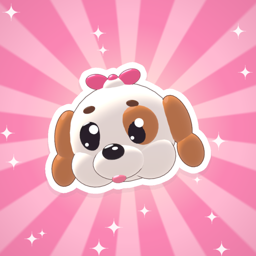
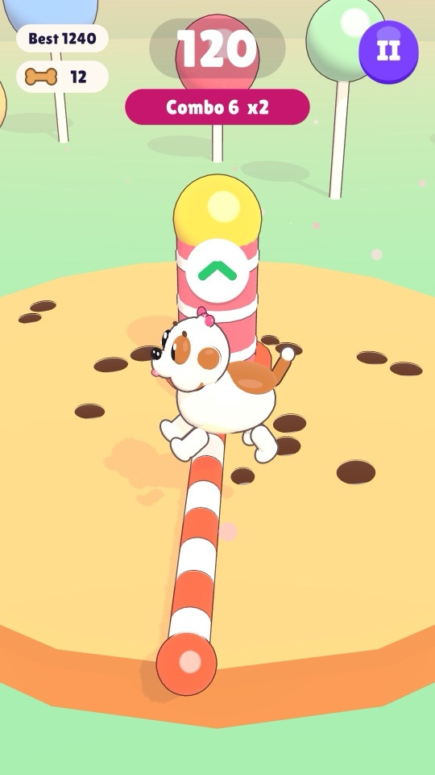
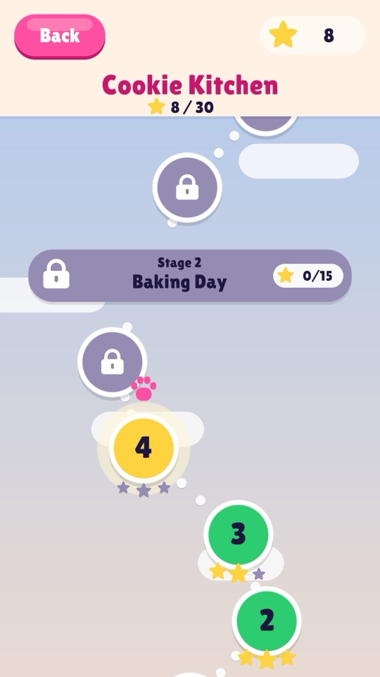
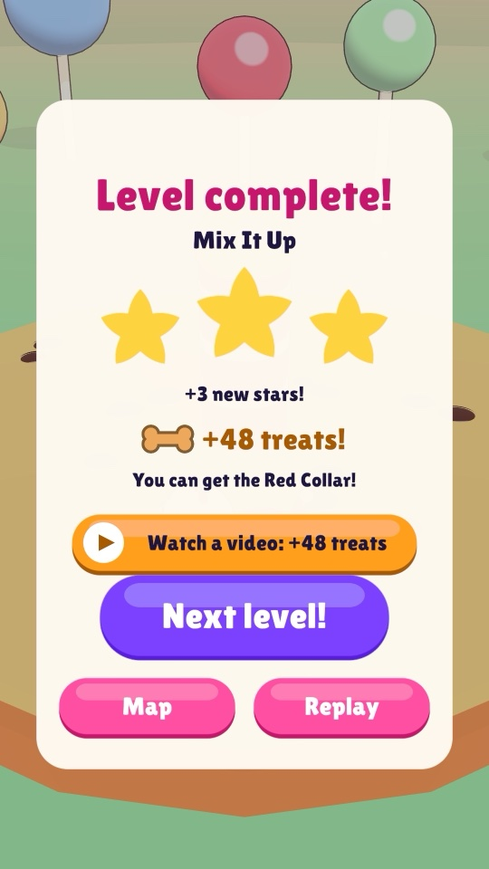
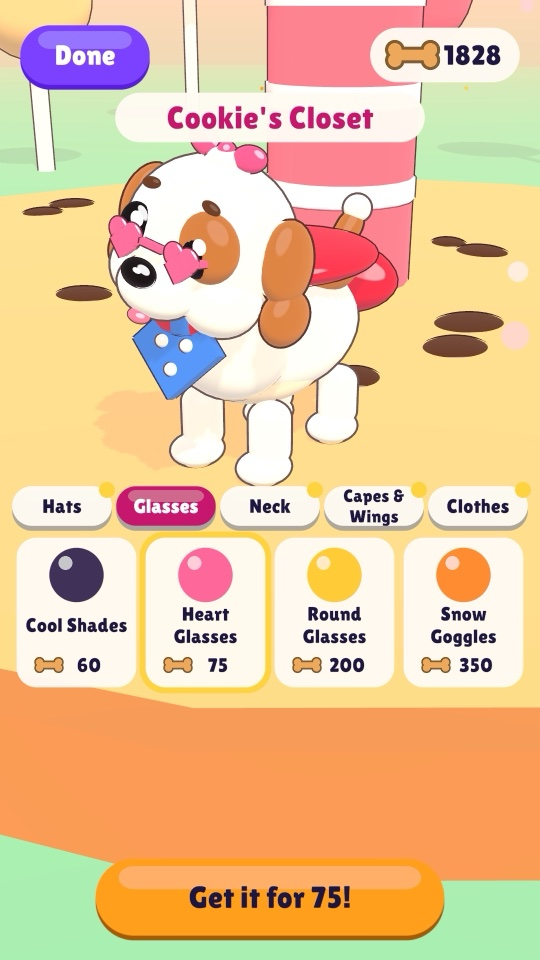

Cookie Jump & Duck
Tap to jump, hold to duck
Cookie Jump & Duck is the first game in Cookie's Little Adventures, a series of gentle games for children aged 5 to 12 starring Cookie, a white-and-caramel cartoon puppy. Cookie stands on a giant cookie while candy bars sweep around: tap to jump over the low ones, press and hold to duck under the high ones.
- 30 levels in 3 worlds with stars, plus an endless mode that speeds up the longer you last
- A friendly tutorial that waits for the right move, and forgiving near misses
- Earn treats by playing and dress Cookie up in 24 outfits
- No accounts or purchases; optional, child-safe reward videos never interrupt play
- 8 languages
A look inside




Skills kids practise
- Timing and rhythm
Perfect dodges come from moving at just the right moment as the bars sweep past.
- Hand-eye coordination
Kids watch the bar, read whether it is high or low, and answer with one finger.
- Wait, then act
Tapping and holding are two different moves, so kids learn to pause and choose instead of tapping on impulse.
- Focus
The bars speed up the longer you last, and each level has its own goal to keep in mind.
- Trying again
Three hearts per level and a quick restart make a bump part of learning, not the end.
- Saving up
Treats are earned by playing and spent in the closet, a first taste of saving for something you want.
Privacy
Cookie Jump & Duck collects no personal information. Optional reward videos come from Google AdMob, set up for children. Read the full privacy policy.
Contact
Questions or feedback: hichgah.game@gmail.com